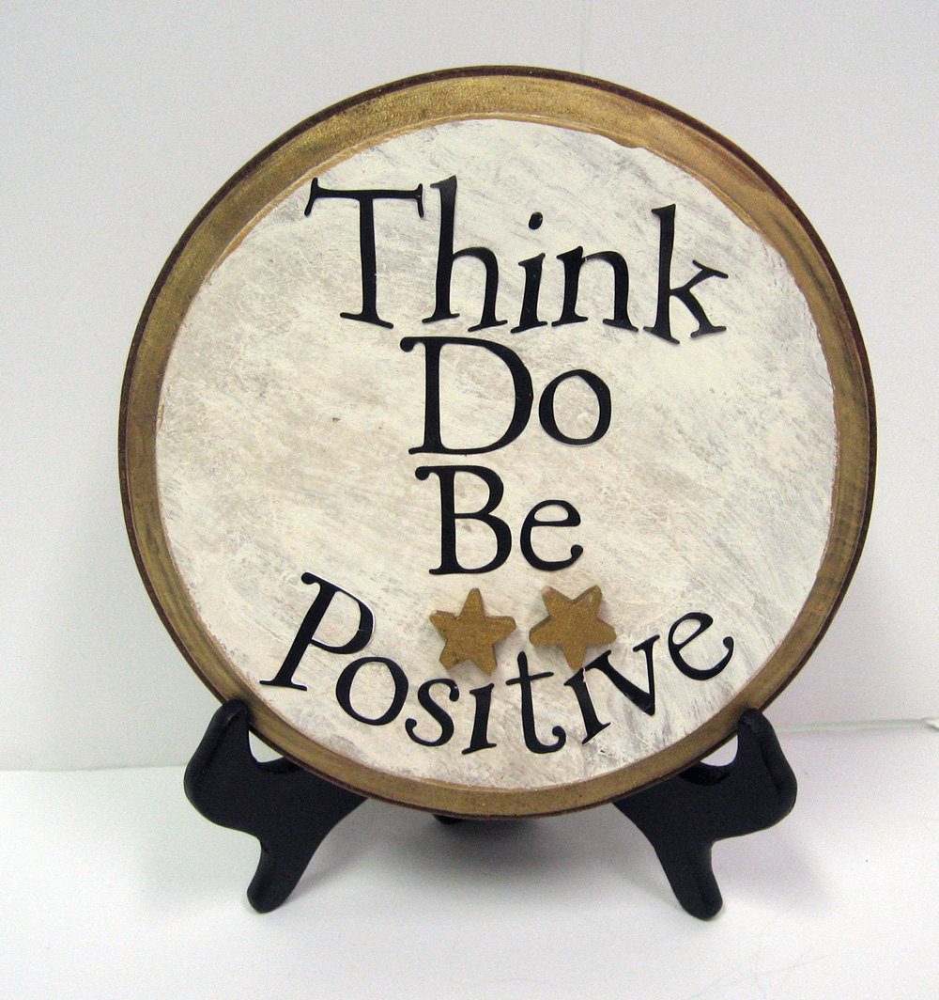

POSITIVE THINKING
February 24, 2016

Positive thinking doesn't mean to keep your head in the sand and ignore life's less pleasant situations. Positive thinking means to approach difficult situations in a more
positive and
productive way. Believing and expecting
positive results not the worst.
Is your glass half-full or half-empty ?
Above age-old question differentiates positive from negative thinker. Positive thinker would answer it as
half full. Be
optimistic.
“The pessimist sees the difficulty in every opportunity; an optimist sees the opportunity in every difficulty.” - Winston Churchill
Everyone are
naturally positive and even more
excited when start learning new things or plan for a new diet. You set your own
goals and look for ways to
succeed them. Only you can
reap your
success.
“You cannot stop the wave but you can learn to surf ” - Jon Kabat Zinn
But there are times when things would go wrong, your
optimistic feeling wears off, you
question yourself and make yourself
uncomfortable. This would often happen when nothing positive shows off even you put your most
hard work in act. It's easy to stack all negative thoughts but its tough recovering from them. It happens for everyone and few finally cross it but majority don't. In such situations, you should strong up mind for positive results expecting things are changing for a better shape and its almost over.
“If you look the right way, you can see that the whole world is a garden.” ― Frances Hodgson Burnett
Self-pep talk would help you analyse current situation and heal oneself. You should try
appreciating yourself for even small things and giving a pat in your back for the choices that you make.
Word of appreciation gives positive courage to face life.
Be a success. Boost yourself up whenever you can.
Be your own best friend. Have faith in yourself and the results will come. The important thing is to feel that you’re worth the effort. You deserve to be
healthy and
confident and
strong.
“I do not believe in taking the right decision, I take a decision and make it right.”
― Muhammad Ali Jinnah
Our minds can only hold one thought at a time, which means we have a choice: We can either focus on a thoughts that makes us feel bad or focus on something that makes us
feel good. Every second that passes is a
chance to turn things around. Even if you didn’t eat well at lunch, you can do better at dinner. You’re not a failure if you didn’t go to the guitar class last week. You can go today. The only thing holding you back is your thinking. Focus on
positive things in life and
enjoy living.
“If you are going through hell, keep going” - Winston Churchill
TAGS: Positive Thinking